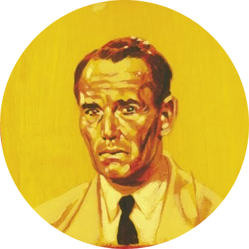

Once personas ya decidieron. Tú no. Lo único que tienes es una duda y el tiempo que logres sostenerla.

Jurado 8
No confrontas: preguntas. No necesitas afirmar que tienes razón, solo insistir en que nadie más la tiene todavía con la certeza que cree tener.
Tu fuerza es la paciencia moral: sostener la incomodidad de ser el único voto distinto sin necesitar aliados para empezar.
Puedes sonar moralmente superior, convertir la duda en sermón sin darte cuenta. Y no ofreces una certeza alternativa — solo restas certeza a la que ya había. Para un cuarto que quiere cerrar el tema, eso se siente casi como una provocación.
Cada una tiene una cara útil y una cara riesgosa. Elegir tres no es armar un héroe sin fisuras: es decidir con qué herramientas — y con qué puntos ciegos — entras al cuarto.
Según las cualidades que elegiste, tu argumento entra al cuarto así:
Abre cada perfil para leer quién es y con qué argumento votó, o elige directamente desde la rejilla. Necesitas exactamente siete, y tienen que cambiar los siete.
Elige un solo contraargumento. Los tres inclinan algo. Solo uno lo mueve del todo.